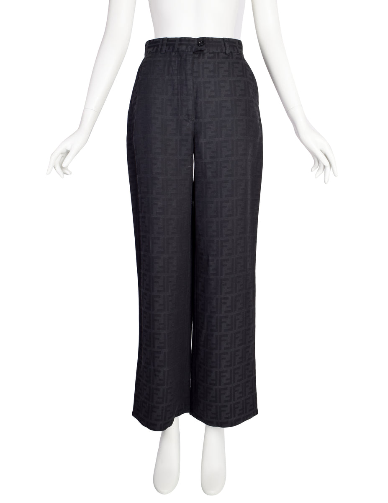
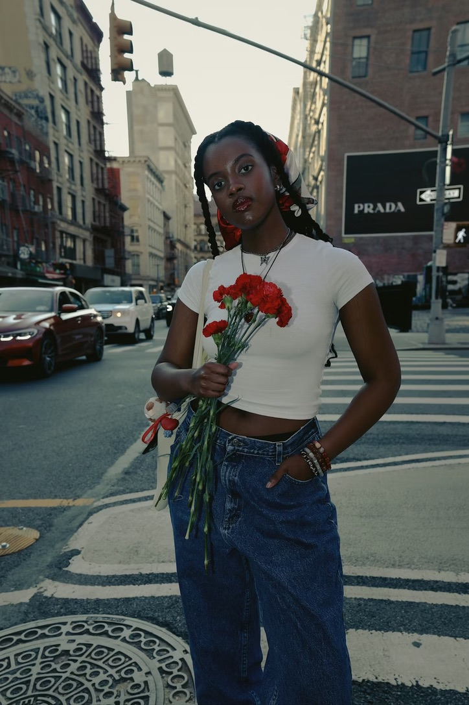
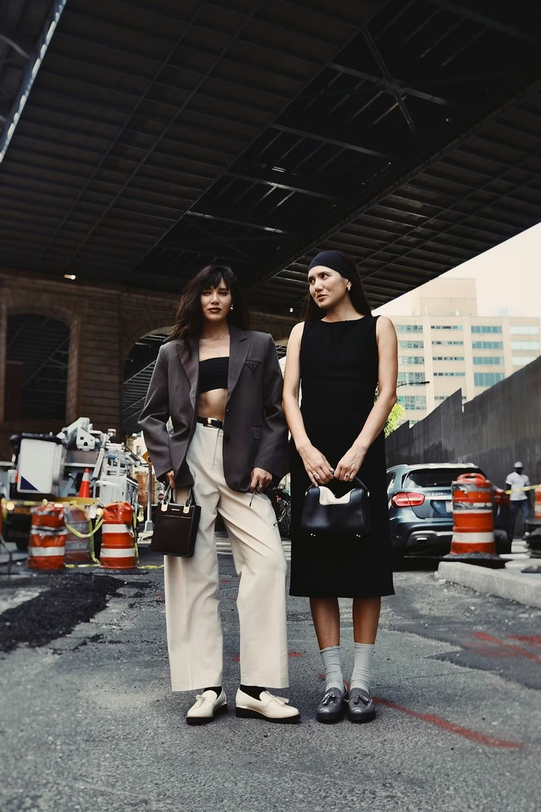
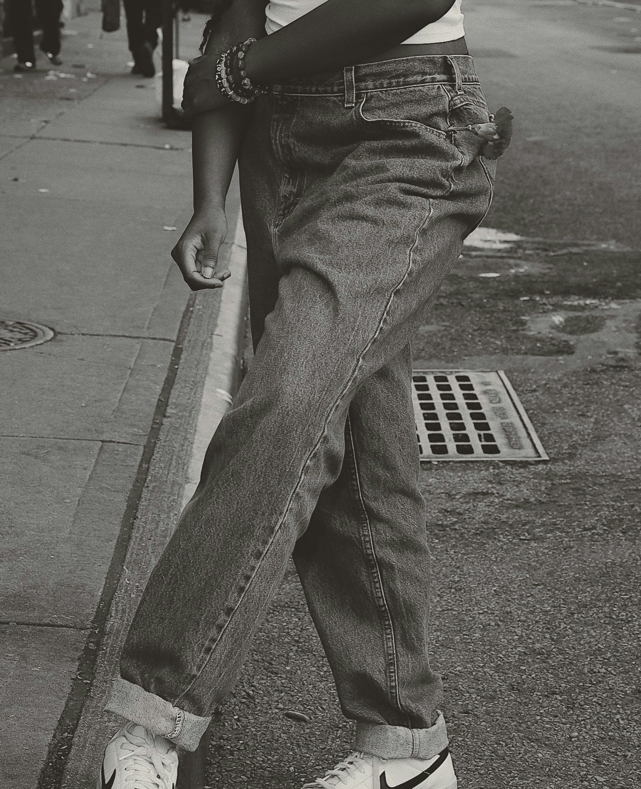
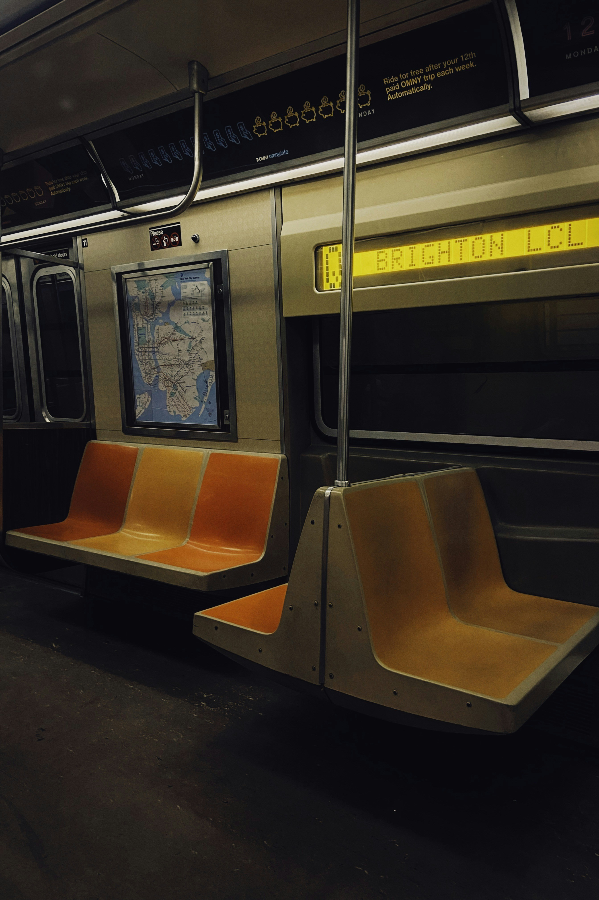
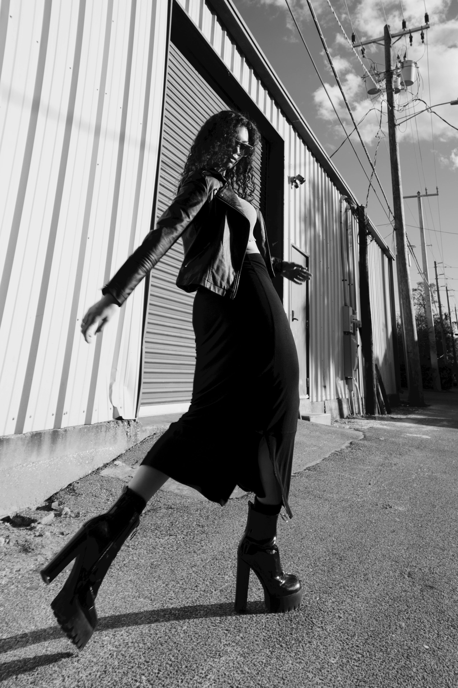
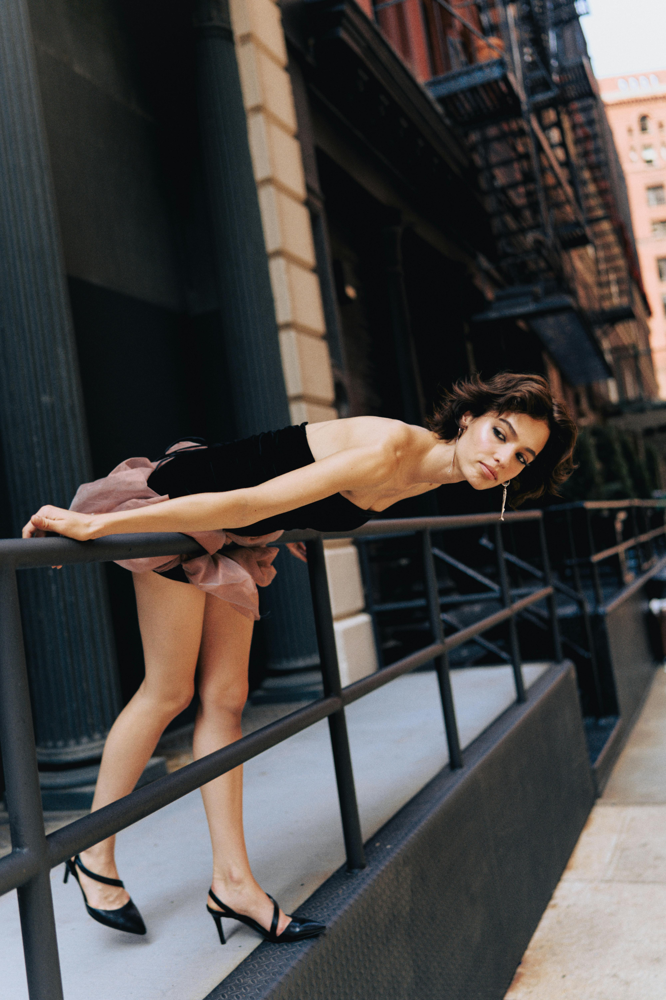
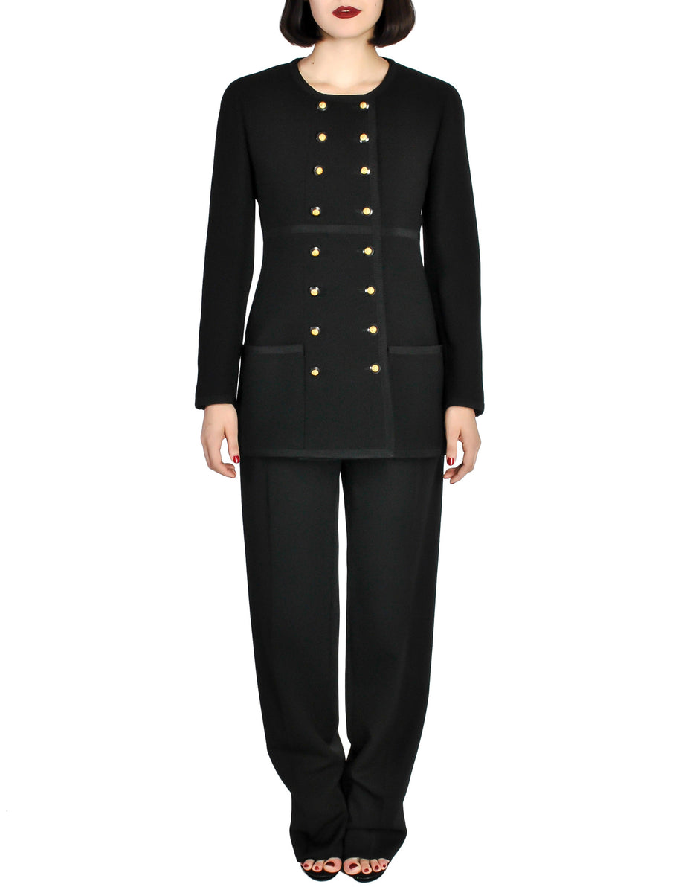
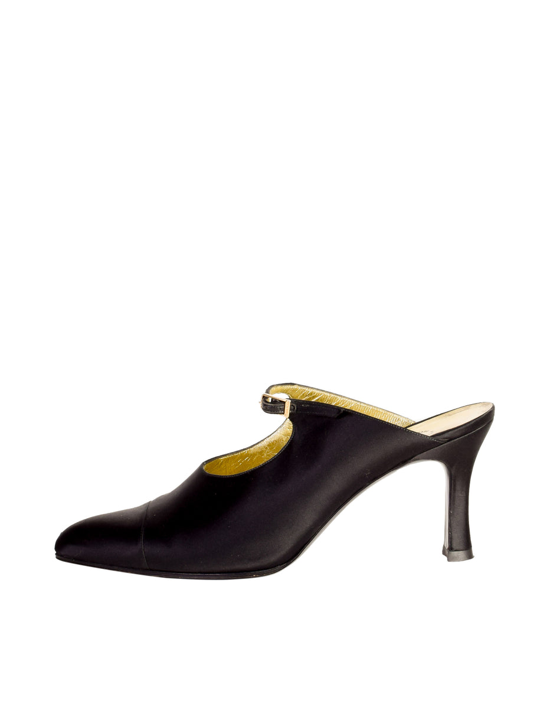

c. 1990
Start with the straight leg: soft in wash, exact in line.
Fendi Zucca Wide-Leg Pant
Amarcord Vintage Fashion / New York

NEW YORK


The high-rise straight leg
defined the silhouette of 90s
minimalism.
It doesn't ask for anything.
It just sets the line.



late light
narrow line
Closer
One more practical note, and the line can answer back.
Tell us the shape it has to meet, and the first edit can stop being abstract.
Bottoms
Outerwear
Shoe (US)
The first edit
The answer lands after the line becomes more specific.
Not yet
Give the edit a little more shape and it will answer back.

c. 1990
Start with the straight leg: soft in wash, exact in line.
Amarcord Vintage Fashion / New York

1993
Then the coat, long enough to hold the mood without hardening it.
Amarcord Vintage Fashion / New York

c. 1991
Finish with the dark shoe that keeps everything nearly silent.
Amarcord Vintage Fashion / New York